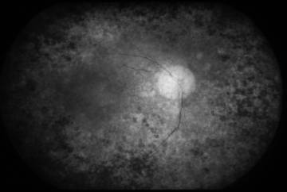

Question: "What is the most common cause of proptosis in the middle age group?"
Options: Ocular hemangioma, Thyroid disorder, Granulomatosis in pregnancy, Sarcoidosis
Answer: Thyroid disorder (Thyroid Eye Disease / Graves' ophthalmopathy)
